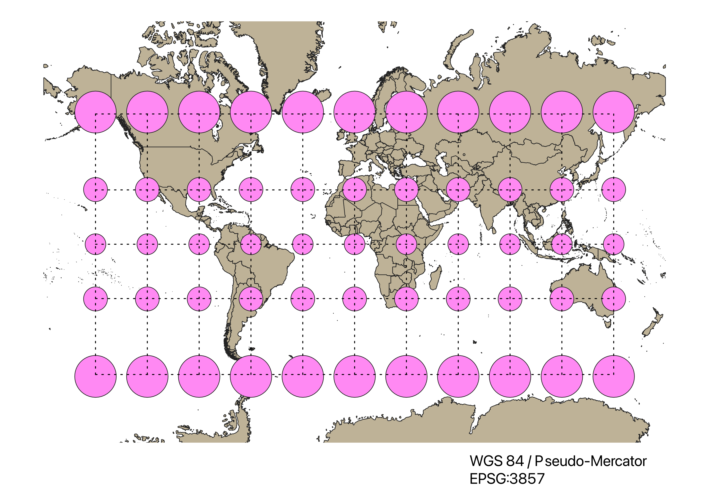
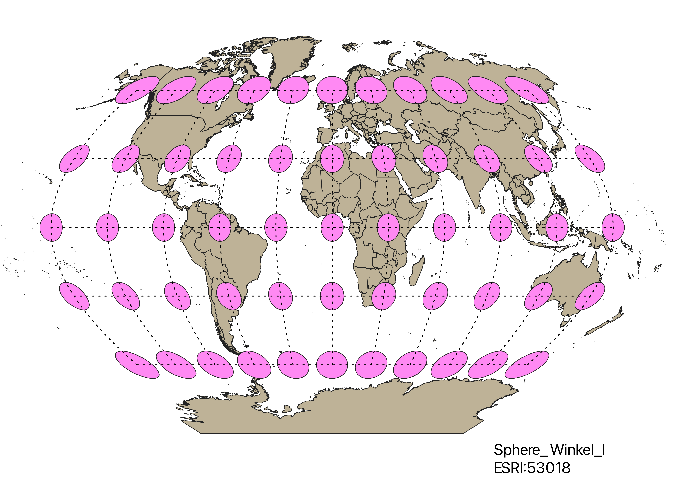
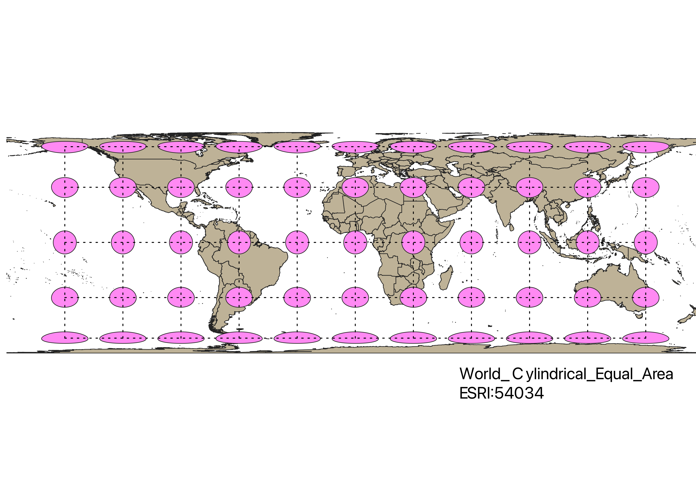
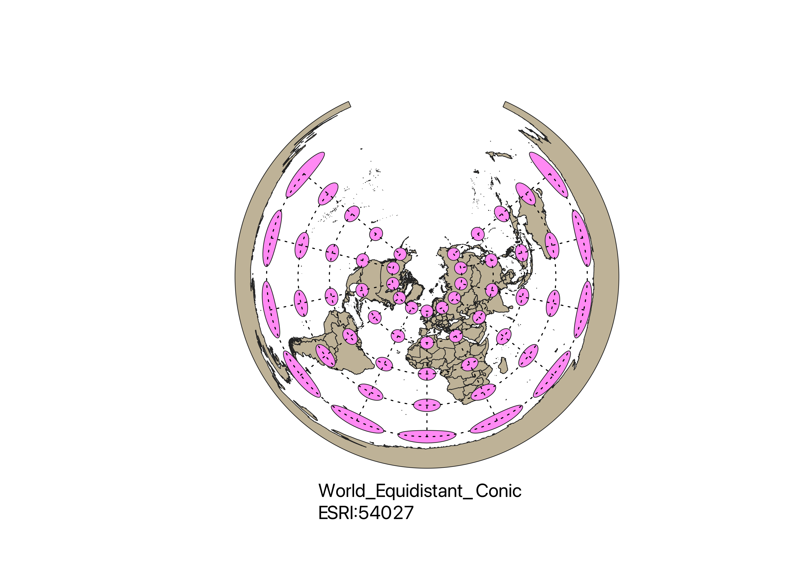
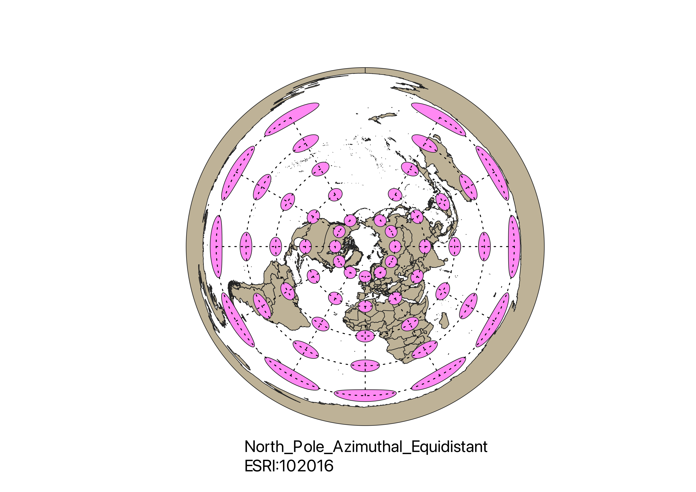
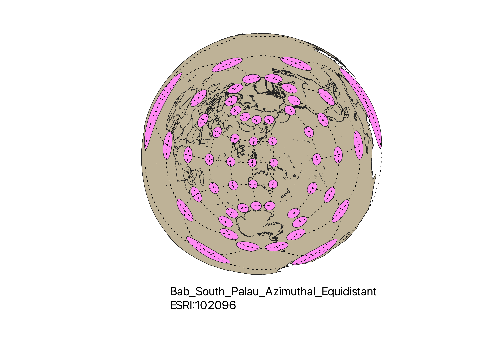
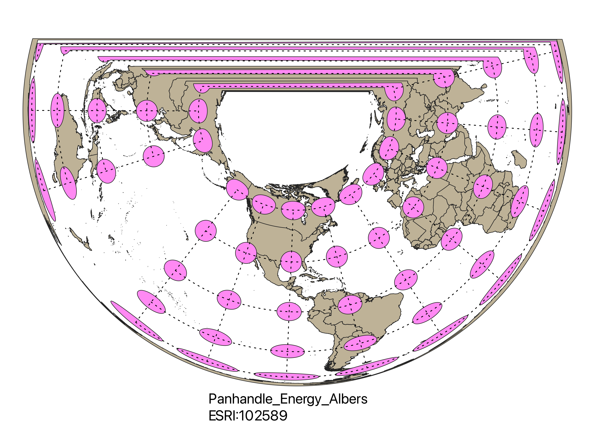

In this project I learned how to display images in different projections
Describe in your own words how you displayed the map in different projections using QGIS
I displayed the map in different projections by changing the projection by using the button in the lower-right corner in QGIS. The indicatrix mapper tool created circles over the projection, which allowed us to see where the map was stretched and distorted.
WGS84 Projection
This map preserves the accuracy for a lot of the world, however it is warped in both shape and area towards the poles.

Aitoff Projection
This map distorts direction and shape, but attempts to balance the warping of area and shape to make the map more accurate.

Now, you should add the following projections on your own:
EPSG: 3857, 53018, 54034, 54027, 102016, and two additional projections that you choose.
Pseudo-Mercator Projection
This map preserves shape at the expense of area, making the regions toward the poles seem much larger then they are in reality.

Sphere Winkel I / Winkel Tripel Projection
This map distorts distance, direction, shape, and area, but distorting all of these characteristics helps minimize the disturbance of any specific one.

Cylindrical Equal Area Projection
This map preserves land area at the expense of land shape towards the poles.

Equidistant Conic Projection
Unlike other maps, this projection maintains the shape and area towards the north pole. However, it continues to warp shape and area toward the south pole.

North Pole Azimuthal Equidistant Projection
This map is similar to the Equidistant Conic Projection, as they both maintain shape and area toward the north pole. This map gets stretched sooner then the previous one towards the south pole.

My additional projections:
102096 Projection
I thought this map was interesting, how it bended the earth and shape of it to maintain the shape and area towards the south pole, above Antarctica.

102589 Projection
I thought it was interesting how this projection was able to largely maintain the shape and area in the southern hemisphere like in South America, Africa and Australia, but at the great expense of Europe and Asia on the map.

Data used for this project
Download Natrual Earth 1:10m Cultural Vector